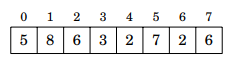
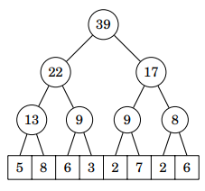
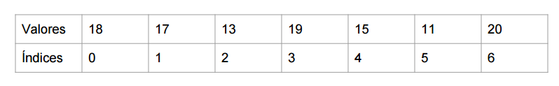
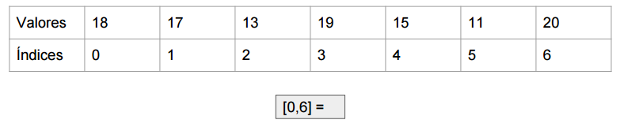

En ciencias de la computación, un Segment Tree es una estructura de datos (arbol) que puede soportar dos operaciones: procesar consultas sobre rangos y actualizar el valor de un array.
Los segment Trees pueden soportar sumas sobre rangos, mínimos y máximos valores en un rango y otros tipos de consulta en tiempo O(log n).
Un segment tree es un árbol binario tal que los nodos del nivel más inferior (hojas del árbol) corresponde a los elementos del array, y los demás nodos contienen información necesaria para procesar consulta sobre rangos.
El árbol se construye recursivamente.
Consideren el siguiente array:
Su correspondiente segment tree sería algo como esto (calcula sumas de rangos):
Encontrar el indice del elemento más pequeño de un array en el rango [i..j]
Tenemos un array de números:
Construyendo el segment Tree:
Hay que tener en cuenta 3 situaciones:
Pero... no solamente funciona con datos estáticos. Veamos que pasa cuando necesitamos actualizar.
Ahora vamos con el código :D
Para construir nuestro Segment Tree de manera correcta debemos tener en cuenta que nos interesan las siguientes 3 funciones:
Estructura de nuestra clase Segment Tree
class SegmentTree{
private int st[], data; // Segment tree y Array de Datos
private int n; // Tamaño del array de datos
public SegmentTree(int [] data){...}
private int left(int p){...}
private int right(int p){...}
private void build(int p, int L, int R){...}
private int update(int p, int L, int R, int idx, int new_value){...}
private int query(int p, int L, int R, int i, int j){...}
public void update(int idx, int new_value){...}
public int query(int i, int j){...}
}
Desplazamiento por los nodos del arbol
private int left(int L){
return L << 1; // * 2
}
private int right(int R){
return R << 1 | 1; // * 2 + 1
}
Construyendo el Segment Tree
public SegmentTree(int [] data){
data = data;
n = data.lenght();
st = new int[ 4 * n ];
build(1, 0, n - 1); //Nodo, inicio, fin
}
private void build(int p, int L, int R){ // * DEPENDE DE LO QUE SE NECESITE
if( L == R ){
st[p] = data[L]; // *
}else{
int mid = ( L + R ) / 2;
build( left(p), L, mid );
build( right(p), mid + 1, R);
int p1, p2;
p1 = st[ left(p) ];
p2 = st[ right(p) ];
st[p] = ( data[p1] < data[p2] ) ? p1 : p2; // *
}
}
Realizar consultas(query) sobre el Segment Tree
public int query(int i, int j){
return query(1, 0, n-1, i, j);
}
private int query(int p, int L, int R, int i, int j){
if( i > R || j < L ) return -1; // O un valor que no sea usado
// Se sale completamente del rango buscado
if( L >= i && R <= j ) return st[p];
int mid = ( L + R ) / 2;
int p1 = query( left(p), L, mid, i, j);
int p2 = query( right(p), mid + 1, R, i, j);
if( p1 == -1 ) return p2;
if( p2 == -1 ) return p1;
return ( data[p1] < data[p2] ) ? p1 : p2;
}
Actualizar el Segment Tree
public void update(int idx, int new_value){
return update(1, 0, n - 1, idx, new_value);
}
private int update(int p, int L, int R, int idx, int new_value){
if( idx < L || idx > R ) return st[p]; // Fuera de rango
if( L == R ){
data[idx] = new_value;
return st[p];
}
int mid = ( L + R ) / 2;
int p1 = update( left(p), L, mid, idx, new_value);
int p2 = update( right(p), mid + 1, R, idx, new_value);
st[p] = ( data[p1] < data[p2] ) ? p1 : p2;
}
¿Cómo usarla?
int[] A = new int[] { 18, 17, 13, 19, 15, 11, 20 };
SegmentTree st = new SegmentTree(A);
st.rmq(1,3);
st.update_point(5,100);
IMPORTANTE... Recuerden que podemos adaptar la estructura a lo que necesitemos :3
¿Dudas Hasta acá?